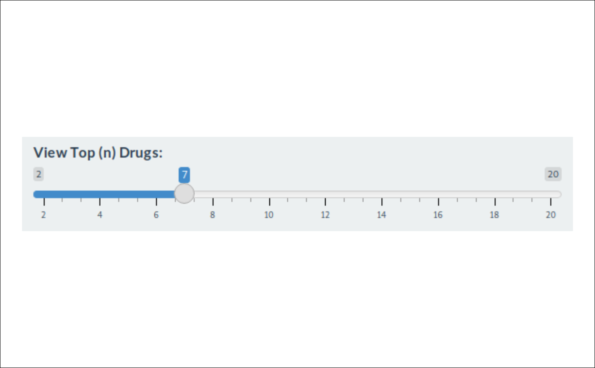
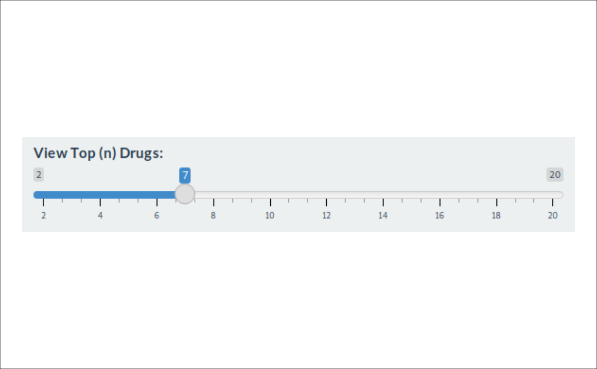
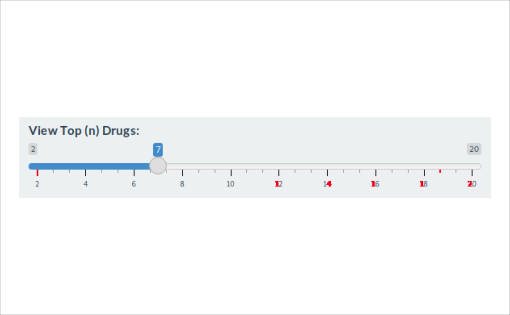
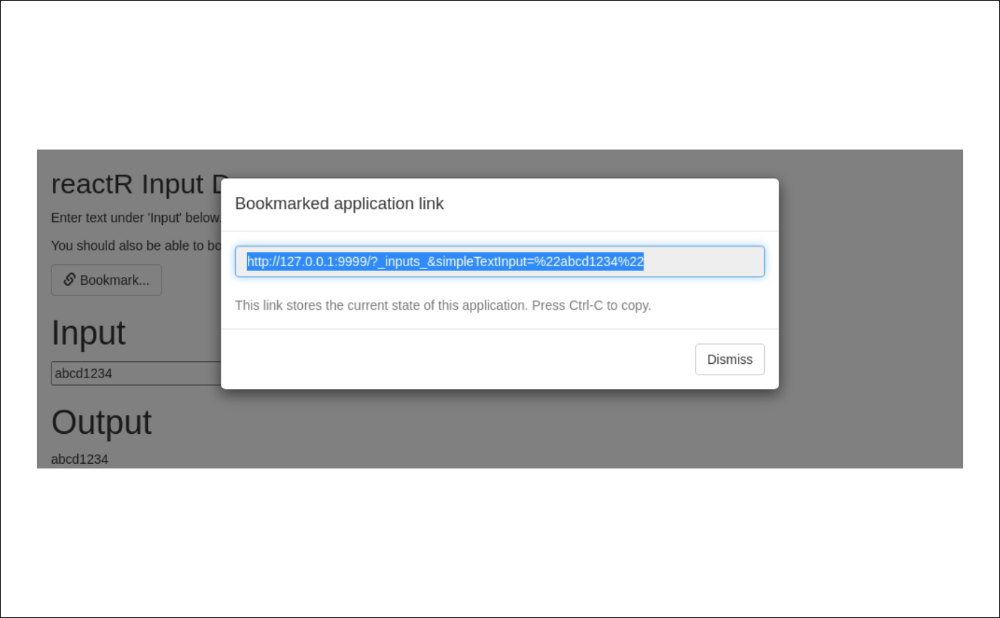
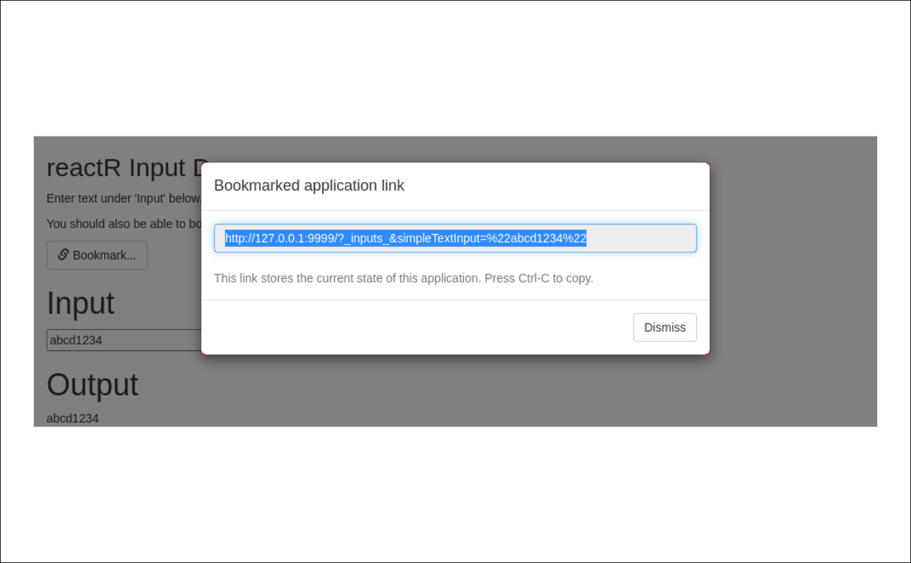

Compare screenshots given threshold value
Source:R/compare-screenshot-threshold.R
compare_screenshot_threshold.Rdchromote can sometimes produce screenshot images with non-deterministic
(yet close) color values. This can happen in locations such as rounded
corners of divs or textareas.
Usage
compare_screenshot_threshold(
old,
new,
...,
threshold = NULL,
kernel_size = 5,
quiet = FALSE
)
screenshot_max_difference(old, new = missing_arg(), ..., kernel_size = 5)Arguments
- old
Current screenshot file path
- new
New screenshot file path
- ...
Must be empty. Allows for parameter expansion.
- threshold
If the value of
thresholdisNULL,compare_screenshot_threshold()will act liketestthat::compare_file_binary. However, ifthresholdis a positive number, it will be compared against the largest convolution value found if the two images fail atestthat::compare_file_binarycomparison. The max value that can be found is4 * kernel_size ^ 2.Threshold values values below 5 help deter false-positive screenshot comparisons (such as inconsistent rounded corners). Larger values in the 10s and 100s will help find real changes. However, not all values are one size fits all and you will need to play with a threshold that fits your needs.
To find the current difference between two images, use
screenshot_max_difference().- kernel_size
The
kernel_sizerepresents the height and width of the convolution kernel applied to the matrix of pixel differences. This integer-like value should be relatively small, such as 5.- quiet
If
FALSEand the value is larger thanthreshold, then a message is printed to the console. This is helpful when getting a failing image and being informed about how different thenewimage is from theoldimage.
Details
These differences make comparing screenshots impractical using traditional
expectation methods as false-positives are produced often over time. To
mitigate this, we can use a fuzzy matching algorithm that can tolerate
small regional differences throughout the image. If the local changes found
are larger than the threshold, then the images are determined to be
different. Both the screenshot difference threshold and the size of the
kernel (kernel_size) can be set to tune the false positive rate.
Functions
compare_screenshot_threshold(): Compares two images and allows for athresholddifference of so many units in each RGBA color channel.It is suggested to use this method with
AppDriver$expect_screenshot(threshold=, kernel_size=)to make expectations on screenshots given particularthresholdandkernel_sizevalues.screenshot_max_difference(): Finds the difference between two screenshots.This value can be used in
compare_screenshot_threshold(threshold=). It is recommended that the value used forcompare_screenshot_threshold(threshold=)is larger than the immediate max difference found. This allows for random fluctuations when rounding sub pixels.If
newis missing, it will use the file value ofold(FILE.png) and default toFILE.new.png
Algorithm for the difference between two screenshots
First the two images are compared using
testthat::compare_file_binary(). If the files are identical, returnTRUEthat the screenshot images are the same.If
thresholdisNULL, returnFALSEas the convolution will not occur.Prepare the screenshot difference matrix by reading the RGBA channels of each image and find their respective absolute differences
Sum the screenshot difference matrix channels at each pixel location
Perform a convolution using a small square kernel matrix that is
kernel_sizebig and filled with1s.Find the largest value in the resulting convolution matrix.
If this max convolution value is larger than
threshold, returnFALSE, images are different.Otherwise, return
TRUE, images are the same.
Examples
img_folder <- system.file("example/imgs/", package = "shinytest2")
slider_old <- fs::path(img_folder, "slider-old.png")
slider_new <- fs::path(img_folder, "slider-new.png")
# Can you see the differences between these two images?
showimage::show_image(slider_old)

showimage::show_image(slider_new)

# You might have caught the difference between the two images!
slider_diff <- fs::path(img_folder, "slider-diff.png")
showimage::show_image(slider_diff)

# Let's find the difference between the two images
screenshot_max_difference(slider_old, slider_new)
#> [1] 28.11765
# ~ 28
# Using different threshold values...
compare_screenshot_threshold(slider_old, slider_new, threshold = NULL)
#> [1] FALSE
#> FALSE # Images are not identical
compare_screenshot_threshold(slider_old, slider_new, threshold = 25)
#> ! Maximum screenshot convolution value `28.1176470588235` > `25` (threshold).
#> • `old`:/home/runner/work/_temp/Library/shinytest2/example/imgs/slider-old.png
#> • `new`:/home/runner/work/_temp/Library/shinytest2/example/imgs/slider-new.png
#> ℹ (To remove this message, increase `threshold`, or set `quiet = TRUE`)
#> [1] FALSE
#> FALSE # Images are more different than 25 units
compare_screenshot_threshold(slider_old, slider_new, threshold = 30)
#> [1] TRUE
#> TRUE # Images are not as different as 30 units
#########################
# Now let's look at two fairly similar images
bookmark_old <- fs::path(img_folder, "bookmark-old.png")
bookmark_new <- fs::path(img_folder, "bookmark-new.png")
# Can you see the difference between these two images?
# (Hint: Focused corners)
showimage::show_image(bookmark_old)
showimage::show_image(bookmark_new)

# Can you find the red pixels showing the differences?
# Hint: Look in the corners of the focused text
bookmark_diff <- fs::path(img_folder, "bookmark-diff.png")
showimage::show_image(bookmark_diff)

# Let's find the difference between the two images
screenshot_max_difference(bookmark_old, bookmark_new)
#> [1] 0.2705882
# ~ 0.25
# Using different threshold values...
compare_screenshot_threshold(bookmark_old, bookmark_new, threshold = NULL)
#> [1] FALSE
#> FALSE # Images are not identical
compare_screenshot_threshold(bookmark_old, bookmark_new, threshold = 5)
#> [1] TRUE
#> TRUE # Images are not as different than 5 units